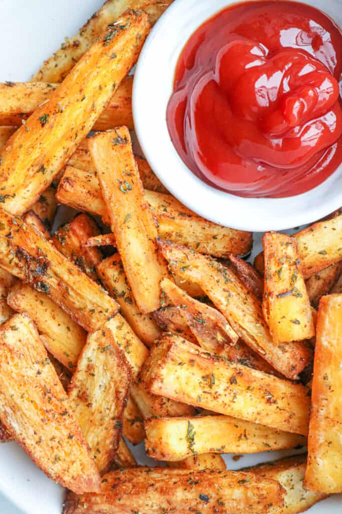

Fried Yuca

Description
A popular root vegetable in South America, the edible root of the cassava fruit, yuca, can be prepared mashed, boiled, or fried.
When made into fries, thick wedges must be cut in order to produce a crispy, crunchy outside, while remaining dense and
textured on the inside. Before being fried, the yuca must be partially cooked in order to prevent the outside from burning and leaving
the inside raw. Frozen, peeled yuca will work just as well for this recipe as fresh roots. Incredibly delicious, fried yuca should
be served alongside chorizo, arepa, or any other meat/side dish.
Ingredients
- 2lbs. yuca root, fresh or frozen
- 2 cups vegetable oil, for frying
- Dash of kosher salt
Steps
- Peel 2 pounds of yuca root.
- Cut out fibrous inner core from all roots.
- Boil a large pot of water, once at boil cook yuca until translucent and can be pierced through
with a fork easily. This will be achieved after about 20 - 30 minutes.
- Drain pot thoroughly.
- Check yuca for fibrous pieces and remove any.
- Cut yuca root into rectangular wedges.
- Pour two inches vegetable oil into a heavy frying pan over medium-high heat.
- Once oil has become hot, around 250°, begin to fry yuca in small batches, turning occassionally yet thoroughly,
until reaching a crispy golden brown.
- Using a slotted spoon or wire skimmer, carefully remove yuca from the pan onto a plate lined in paper towels.
- Sprinkle a small amount of Kosher salt onto yuca fries. Serve with sides or sauces of your choice and experience
the vibrant, beautiful flavors of your fried yuca.
Home